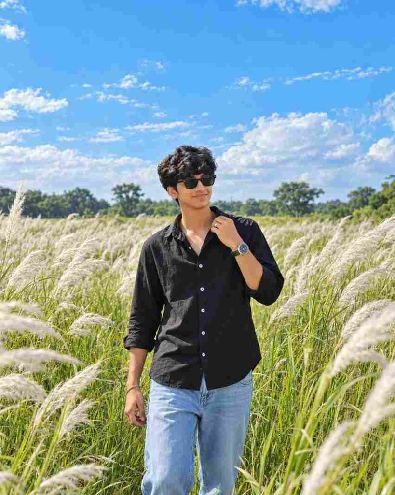

If you want to transform a regular portrait into a beautiful outdoor cinematic photo, this Cinematic Outdoor AI Photo Editing Prompt 2026 can help you create a more professional-looking result. AI photo editing tools can change the background, lighting, atmosphere, and overall visual style while keeping the main subject recognizable. This prompt is designed for creating a natural outdoor portrait with a wide scenic background, soft clouds, green surroundings, and a cinematic appearance. You can use your own clear reference photo and apply the prompt to create a personalized image that looks suitable for social media posts, profile pictures, or creative photography projects.
What Is Cinematic Outdoor AI Photo Editing?
Cinematic outdoor AI photo editing is a creative way to transform a regular portrait into an outdoor scene with a more dramatic and photography-inspired appearance. Instead of manually changing the background, lighting, colors, and other visual elements, an AI image tool can generate these changes from a detailed text prompt. The final image can include natural surroundings, realistic lighting, depth, and a cinematic atmosphere. By using a reference image, you can also guide the AI to maintain important characteristics of the original person. This makes it easier to create an outdoor portrait with a polished look while keeping the overall composition natural.
Cinematic Outdoor AI Photo Editing Prompt
Download and use this reference image to recreate the exact same background in your photo.
Save this image on your device ⬇️
Want more awesome prompts?
Join our community and get the latest viral prompts daily.
Follow on Instagram
How to Create Cinematic Outdoor AI Photo
First, save the image from the above paragraph to your phone as the background, and then copy the prompt. Now, click on the Create Image on ChatGPT button. You will be redirected to ChatGPT, or you can directly use the ChatGPT app for a better experience. Upload your face image or the saved background image to ChatGPT, paste the copied prompt, and click on the send icon. Wait for a while, and you will get a good result. If you don’t get the best result, you can try again.
Use a Clear Reference Photo
The quality of your reference photo can have an important effect on the generated image. Choose a photo where your face is clearly visible and there is enough detail for the AI tool to understand your appearance. A well-lit portrait with a natural pose can make it easier to maintain facial features and overall identity. Avoid heavily blurred photos or images with strong filters because they may make some details difficult to reproduce. If possible, use a high-resolution image with a clear view of the face, hairstyle, and clothing. A good reference image combined with a detailed prompt can help create a more consistent and realistic outdoor portrait.
Green Field and Kash Grass Background
The green field and tall white Kash grass are important visual elements of this outdoor AI photo concept. The grass can create a wide and natural landscape while the white flowers add contrast against the green surroundings. The prompt can describe the field as spacious and realistic, with the subject standing naturally in the center or preferred position. A bright blue sky with soft white clouds can add depth to the upper part of the image. Combining these elements creates a peaceful outdoor environment while allowing the subject to remain the main focus of the portrait.
Tips for Better AI Photo Results
For the best results, use a clear and high-quality reference image where the face and important features are easily visible. Since the Kash grass field and blue sky background are already described in the prompt, focus on maintaining the person’s facial features, hairstyle, skin tone, clothing, pose, and overall appearance. After generating the image, carefully check the face, hands, hair, clothing, and body proportions for any unwanted changes. If needed, make small adjustments to the prompt and generate another version. Keep your instructions clear and specific so the AI can better understand the desired cinematic outdoor photography style.
Final Words
The Cinematic Outdoor AI Photo Editing Prompt 2026 is a creative way to turn a regular portrait into a scenic outdoor image with a cinematic photography style. By using a clear reference photo and a detailed prompt, you can create a green field setting with tall white Kash grass, blue skies, natural lighting, and a professional-looking composition. Start with your best reference image, apply the prompt, review the generated result, and make small adjustments when necessary. You can experiment with different backgrounds and visual details to create your own version. I hope this guide helps you create a beautiful cinematic outdoor AI photo for your social media and creative projects.